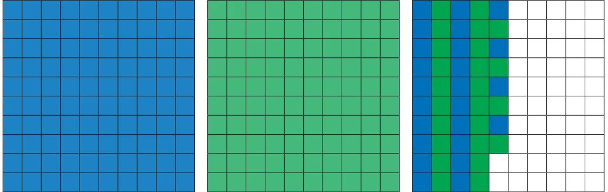
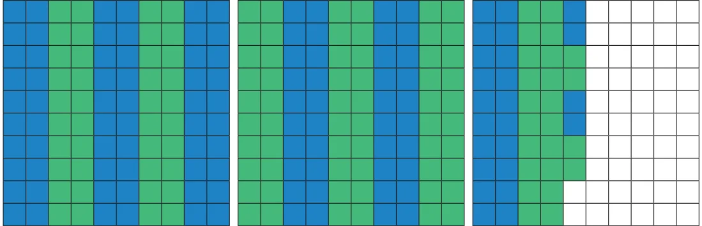
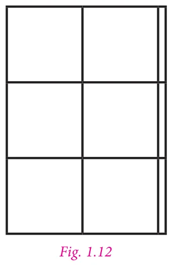
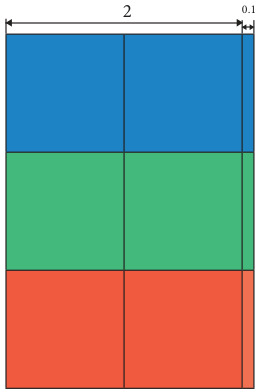
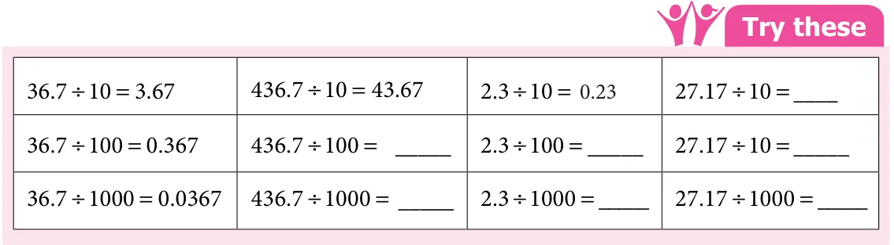
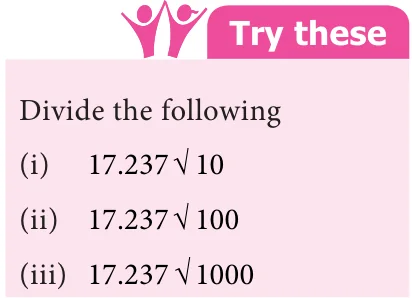
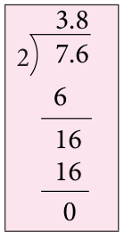
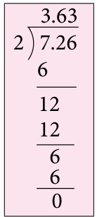
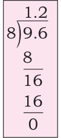
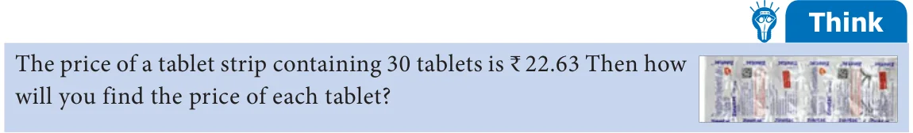

A bale of shirt material consists of 24.75 m. A shop-keeper wants to make shirt bits each of 1.5 m outfit. How many bits can be made? To find the answer, we have to divide 24.75 by 1.5.
In real life, there are many situations where we need to divide decimal numbers.
(i) Decimal Division through models
- Use decimal grids to find the quotient, as you have already learnt to represent decimals in the grid form.
- Consider 2.48 in the grid form.
- To find \(2.48 \div 2\), shade grids to show the decimal number 2.48 by 2. Since division means equal sharing. Seperate the shaded region into 2 equal parts as shown below.

Here each colour represents the quotient (i.e) 1.24.
Hence, \(2.48 \div 2 = 1.24\).
Let us do the division of 2.48 by 2 in the other way. Observe the following figure.

Consider 2 wholes, when you divide 2 wholes equally in groups of two's, each group gets 5 such groups which represents 1 whole. Next consider the tenth, taking four tenth and dividing it in group of two's, we get two such groups and each group represents two tenth. Finally, dividing 8 hundredth in group of two's, each group has 4 hundredth.
Therefore \(2.48 \div 2 = 1\) whole 2 tenth 4 hundredth \(= 1.24\).
Example 1.23
Divide 6.3 by 3 using area model.
Solution
The decimal number 6.3 is shown in Fig. 1.12.

Since 6.3 is divided by 3, we seperate the areas into 3 equal groups using three different colours as in Fig. 1.13.

Each group to represents 2.1, which is the quotient.
Therefore, \(6.3 \div 3 = 2.1\).
(ii) Division by 10, 100 and 1000
Let us learn how to divide decimal numbers by 10, 100 and 1000. For example, consider \(51.7 \div 10\)
Now \(51.7 = \frac{517}{10}\)
\[\text{Therefore, } \frac{51.7}{10} = \frac{517}{10} \times \frac{1}{10} = \frac{517}{100} = 5.17\] \[\text{Similarly, } 51.7 \div 100 = \frac{517}{10} \times \frac{1}{100} = \frac{517}{1000} = 0.517\] \[\text{Also } 51.7 \div 1000 = \frac{517}{10} \times \frac{1}{1000} = \frac{517}{10000} = 0.0517\]When decimal numbers are divided by powers of 10, it can be noted that the decimal number so obtained contains the same number of decimal digits as that of zeros in powers of 10.
Let us see whether there is a pattern for dividing numbers by 10, 100 and 1000. Observe the following and complete it.

Take. \(36.7 \div 10 = 3.67\). In 36.7 and 3.67, the digits are the same namely, 3, 6 and 7, but the decimal point has been shifted to the left by one place in the obtained decimal number after division. Note that 10 is one zero followed by 1.
Similarly, in \(36.7 \div 100 = 0.367\), the decimal point has been shifted to the left by two places in the obtained decimal number after division. Note that 100 is two zeros followed by 1.
Similarly, in \(36.7 \div 1000 = 0.0367\), the decimal point has been shifted to the left by three places in the obtained decimal number after division. Note that 1000 is three zeros followed by 1.

Hence we can conclude that while dividing a decimal number by 10, 100 and 1000, the digits of the number (Dividend) and the obtained decimal number after division are the same but the decimal point in the obtained decimal number after division is shifted to the left by as many places as there are zeros followed by 1.
Therefore, we can find \(2.68 \div 10 = 0.268\); \(2.68 \div 100 = 0.0268\); \(2.68 \div 1000 = 0.00268\).
(iii) Division of a decimal number by a whole number
Let us divide a decimal number by a whole number. Consider the following.
(i) \(7.6 \div 2\)


(ii) Consider \(7.26 \div 2\)
\[\text{Now } 7.26 = \frac{726}{100}\] \[7.26 \div 2 = \frac{726}{100} \times \frac{1}{2} = \frac{1}{100} \times \frac{726}{2} = \frac{1}{100} \times 363 = \frac{363}{100} = 3.63\](iii) \(9.6 \div 8\)

Note
We have to estimate to check that the quotient is reasonably correct. Round 9.6 to 10 and divide by 8. Since 8 goes into 10 once with a small reminder, the answer 1.2 is reasonably correct.
From the above three cases, we observe that we can also divide the number without considering the decimal point first and then the number of decimal digits of the quotient has to be made equivalent to the number of decimal digits of the dividend.
For example, take \(52.16 \div 4\). Now, let us divide 5216 by 4.
\[\frac{5216}{4} = 1304\]Now there are 2 decimal digits in the dividend. So the quotient also will have two decimal digits.
Therefore, \(52.16 \div 4 = 13.04\).
Try these
Find the value of the following.
- \(46.2 \div 3 = ?\)
- \(71.6 \div 4 = ?\)
- \(23.24 \div 2 = ?\)
- \(127.35 \div 9 = ?\)
- \(47.201 \div 7 = ?\)
Example 1.24
Sugarcane juice of 1.5 l has to be shared equally among five members. What is the share of each member?
Solution
Quantity of sugarcane juice \(= 1.5\) l
Number of persons to be shared \(= 5\)
Individual share \(= \frac{1.5}{5} = 0.3\) l
Therefore, the individual share is 0.3 litres.
(iv) Division of a Decimal Number by another Decimal Number
Kavitha wants to distribute groundnut balls to all her classmates on her birthday. She has ₹61.50 in her piggy bank. If each groundnut ball costs ₹1.50, how many balls she can get with that amount? In real life, there are situations in which we need to divide a decimal number by another decimal number.
(i) Consider, \(15.5 \div 0.5\)
\[15.5 \div 0.5 = \frac{15.5}{0.5} = \frac{\frac{155}{10}}{\frac{5}{10}} = \frac{155}{10} \times \frac{10}{5} = 31\]Thus, \(\frac{15.5}{0.5} = 31\).
(ii) Let us consider \(62.5 \div 0.25\)
\[\text{Now } 62.5 \div 0.25 = \frac{62.5}{0.25}\]Since \(62.5 = \frac{625}{10}\) and \(0.25 = \frac{25}{100}\) we get,
\[\frac{62.5}{0.25} = \frac{\frac{625}{10}}{\frac{25}{100}} = \frac{625}{10} \times \frac{100}{25} = \frac{625 \times 10}{25} = \frac{6250}{25} = 250.\](iii) Consider another example \(2.25 \div 0.9\)
\[\text{Now } 2.25 \div 0.9 = \frac{2.25}{0.9}\]Since \(2.25 = \frac{225}{100}\) and \(0.9 = \frac{9}{10}\)
we get,
\[\frac{2.25}{0.9} = \frac{\frac{225}{100}}{\frac{9}{10}} = \frac{225}{100} \times \frac{10}{9} = \frac{225}{9 \times 10} = \frac{225}{90} = 2.5.\]Try these
Divide the following.
- \(\frac{9.25}{0.25}\)
- \(\frac{8.6}{4.3}\)
- \(\frac{44.1}{0.21}\)
- \(\frac{9.6}{1.2}\)
Hence, we can conclude that when both dividend and divisor has same number of decimal digits the division is as simple as the usual division of two natural numbers. When dividend and divisor has different number of decimal digits, first express both the divisor and the dividend in fractional form and then divide.
Example 1.25
A car covers 16.8 km in 0.21 hours. What is the distance covered by the car in one hour?
Solution
The distance covered by the car in one hour \(= \frac{16.8}{0.21}\)
Multiply the divisor by 100 to make it a whole number. Hence multiply the dividend also by 100.
Therefore, \(\frac{16.8 \times 100}{0.21 \times 100} = \frac{1680}{21} = 80\).
Hence, the distance covered by the car in one hour is 80 km.
Example 1.26
The perimeter of a regular polygon is 17.5 cm. Each side measures 2.5 cm. Find the number of sides of the polygon.
Solution
Since it is given that the polygon is a regular polygon, all sides will be equal.
Therefore, the number of sides of a polygon \(= \frac{\text{perimeter}}{\text{one side}} = \frac{17.5}{2.5} = \frac{175}{25} = 7\)
(Equal number of decimal digits in both dividend and divisor)
Hence, the polygon has 7 sides.
